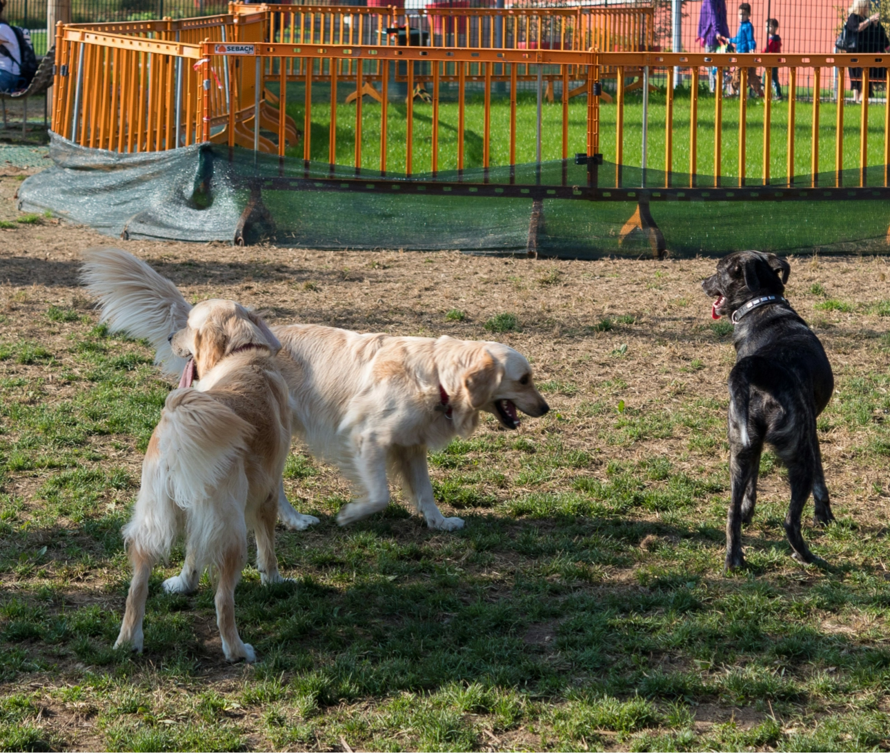

<app-app-header [headerText]="dynamicHeaderText" [returnLink]="returnLink"></app-app-header>

<ion-content [fullscreen]="true" >
  
  <div class="container-contenido">
    <div  class="container-paseos" >
    <div class="container-fotoperro">
      
      <ion-icon src="../../../assets/icons/Grupo 11702.svg" class="category-icon"></ion-icon>
    </div>
    <div class="container-datos" >
      <ion-icon class="signoDirigir" slot="start" src="assets/icons/Trazado 47843.svg" ></ion-icon>
      <div class="container-info">
        <p class="nombre">Parque para perros</p>
        <p class="distancia">A 0,3 km de ti · Jerez de la Frontera, Cádiz</p>
        
      </div>
    </div>
  
  </div>
    

  </div>

</ion-content>
